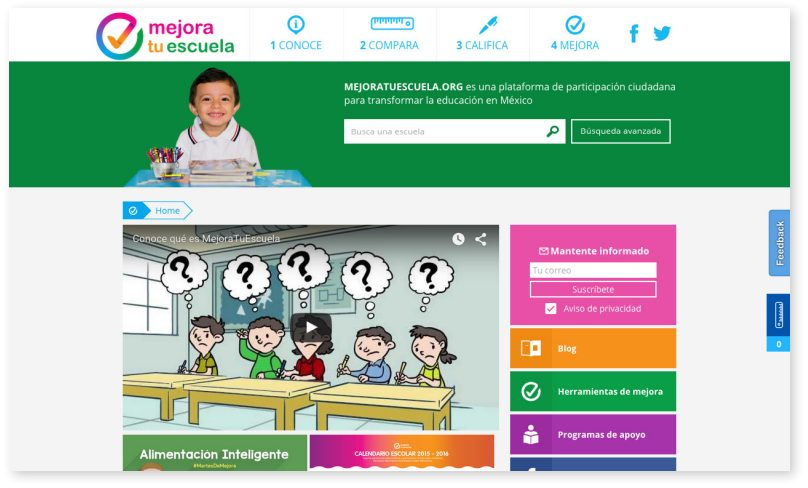

- در مواردی که دولتها تمایلی به انتشار اطلاعات بالقوه مخرب به عموم مردم ندارند، جامعه مدنی میتواند نقش مهمی در یافتن راههای خلاقانه برای به دست آوردن، پاکسازی و انتشار این اطلاعات ایفا کند.
- در کشورهایی با مشکلات اجتماعی بزرگ مانند فساد شایع، از دست دادن دیدگاه استفاده موثر از داده باز برای بهبود زندگی روزمره شهروندان آسان است.
توانمندسازی شهروندان
تصمیم گیری آگاهانه
۱. پیشینه و زمینه
آموزش و پرورش در مکزیک
در طول سال ها، آموزش در مکزیک غیراستاندارد بوده و به طور کلی از استانداردهای سایر کشورهای مشابه عقب مانده است. این عملکرد ضعیف را نمیتوان به فقدان منابع بودجهای نسبت داد - مکزیک نسبت به دیگر اعضای سازمان همکاری اقتصادی و توسعه (OECD) بخش بزرگتری از بودجه خود را صرف آموزش و پرورش میکند. لازم به ذکر است که، حداقل تا حدی، این امر به دلیل تعداد بیشتر کودکان مکزیکی است که از سیستم مدارس دولتی نسبت به دیگر کشورهای OECD عبور میکنند. اما در حالی که این پول منجر به آموزش پایه جهانی شدهاست، نتایج آن سرسختانه ضعیف باقی میماند. میزان فارقالتحصیلی مکزیک در نزدیکی کشورهای عضو OECD قرار دارد و کمتر از نیمی از دانشآموزان دیپلم دبیرستان را دریافت میکنند. علاوه بر این، دانشآموزان مکزیکی در آزمونهای بینالمللی تطبیقی ریاضی، علوم و مهارتهای خواندن عملکرد ضعیفی دارند و طبق مطالعه اخیر، ۸۰ درصد از معلمان در آزمون ارزیابی که برای آزمون شایستگی آنها طراحی شدهبود، شکست خوردند. با اینکه بودجه سیستم آموزشی مکزیک به صورت سخاوتمندانهای تامین شدهاست، اما در طول سالها از فساد همهگیر رنج بردهاست. محاسبه میزان فساد دشوار است، اما از نظر همه بسیار زیاد میباشد. سال گذشته، یک «سوءاستفاده سنج» - تابلوی الکترونیکی غولپیکری که در پایتخت توسط فعالان نصب شد و تلاش میکرد میزان سوءاستفادهها را در زمان واقعی بهروزرسانی کند - برآورد کرد که هر سال حداقل ۲.۸ میلیارد دلار به دلیل فساد در بخش آموزش از بین میرود. سالی که این بیلبورد نصب شد، نشان داد که بیش از ۳۳ میلیون دلار تنها در هفته اول سال تحصیلی از دست رفته است.
این فساد اشکال مختلفی دارد: معلمان روح در فهرست حقوق، اعلام نتایج امتحانات، مقامات با شیوه زندگی پرهزینه، معلمان متقاضی رشوه برای دادن نمرات خوب و معلمانی که برای گذراندن آزمونهای آموزشی رشوه میگیرند. فساد گسترده است و به طور فزایندهای به رسمیت شناخته شدهاست. یکی از فعالان به تازگی به فساد در سیستم آموزش و پرورش به عنوان «سرقت قرن» اشاره کردهاست. گزارش سال ۲۰۰۹ سازمان شفافیت بینالمللی نشان داد که خانوادههای متوسط ۳۰ دلار اضافی در سال برای آموزش و پرورش فرزندانشان پرداخت میکنند، با وجود اینکه آموزش و پرورش «براساس قانون اساسی، رایگان است.» در سال ۲۰۱۰، شاخص ملی شفافسازی مکزیک در مورد فساد و حکومت متوجه شد که والدین ۳.۵ درصد از زمانی که به دنبال فرم ثبتنام برای مدارس دولتی بودند، رشوه دادهاند.
اطلاعات و دادههای باز در مکزیک
در مکزیک نیز مانند بسیاری از کشورهای جهان، اطلاعات به طور فزایندهای به عنوان ابزاری برای مبارزه با فساد در نظر گرفته میشود. همانطور که گاوین استارکس در گاردین بحث میکند: «اجازه دادن به شهروندان برای دسترسی آزادانه به دادههای مربوط به موسساتی که آنها را اداره میکنند برای یک جامعه دموکراتیک با عملکرد خوب ضروری است. این اولین گام به سمت حفظ رهبران برای در نظر گرفتن شکستها و خطاکاری است.»
مکزیک تلاش کردهاست تا این اصول را در بخش آموزش خود به کار گیرد. در سال ۲۰۰۸، کنگره مکزیک قانونی را تصویب کرد که همه ایالتها را ملزم به ارائه اطلاعات در مورد شرایط مدارس، پرداخت حقوق و سایر هزینهها به دولت فدرال میکرد. در آن زمان، این فشار برای شفافیت بیشتر به عنوان مولفه حیاتی تلاش برای مبارزه با فساد در آموزش و پرورش دیده میشد. با این حال، ثابت شدهاست که قانون تا حد زیادی بیطرفانه است: چهار ایالت از ۳۲ ایالت پایگاهداده حقوق و دستمزد خود را در سهماهه آخر سال ۲۰۱۳ تحویل ندادند و هشت ایالت پایگاهداده خالی یا ناقص را تحویل دادند. در این زمینه است که اقدامات دادهباز مکزیک باید هم به عنوان بخشی از استراتژی مبارزه با فساد در آموزش و پرورش و هم به طور کلی مبارزه با فساد در نظر گرفته شوند. در حال حاضر، این کشور در بارومتر دادهباز در رده بیست و چهارم قرار دارد و از سال ۲۰۱۳ تاکنون یک پله صعود کردهاست. دولت یک پورتال دادهباز فدرال دارد که حاوی اطلاعاتی از دولتهای فدرال، ایالتی و شهری است، به عنوان نهادهای دولتی خودمختار (که تحت کنترل بخشهای اداری و فنی دولت مرکزی نیستند)، مانند Instituto Federal de Telecomunicaciones. پورتال دادهباز بخشی از استراتژی دیجیتال ملی گستردهتری است که توسط آنیا کالدرون، مدیر کل بخش دادهباز برای دولت مکزیک پشتیبانی شد، که در حال تلاش برای تغییر روش برخورد با دادههای باز از «یک منبع منفعل به اطلاعات قابل اقدام است که میتواند نتایج عینی به ما بدهد.»
این درگاه به چند پیروزی اولیه دست یافتهاست، مانند انتشار ۱۰۰ مجموعه داده دولتی در عرض ۴۲ روز پس از راهاندازی آن. با این حال، در حالی که چنین دستاوردهایی قابلستایش هستند و حتی ممکن است برخی پیشرفت بسیار داشته باشند، فساد یک چالش بزرگ باقی میماند و شناسایی محدودیتهای تلاشهای دادهباز مکزیک تا کنون مهم بوده است. اسکار مونتیل، مدیر مشارکت اجتماعی در کدیندو مکزیک، سازمانی که به دنبال «کنار هم آوردن بهترین استعدادها و سازمانها برای ایجاد نسل جدید فنآوری شهری» است، اشاره میکند در حالی که «در سطح سیاست، همه چیز فوقالعاده به نظر میرسد»، برنامههای دادهباز دولت گاهی به طور ضعیف اجرا میشوند. او همچنین اشاره میکند که اگرچه یک درگاه دادهباز فدرال وجود دارد، اما سوالات همچنان باقی میمانند (همانطور که در همه کشورها انجام میدهند)«چه کسی تصمیم میگیرد چه چیزی باید باز باشد و چه زمانی.» در نهایت، او اضافه میکند که چون اکوسیستم دادهباز مکزیک تا حد زیادی حول قراردادها و مجوزها (اغلب چندساله) ساخته شدهاست، تغییرات ممکن است ماهها و یا حتی سالها طول بکشد، و وقتی بحث انتشار داده حاکمیتی باز پیش میآید، عدم پویایی نیز به وجود خواهد آمد.
سایر موارد مثبتتر هستند. رافائل گارسیا آکوز از سازمان شفافیت مکزیک «جامعه واقعا پر جنب و جوش» کاربر دادههای باز در کشور را توصیف میکند. او استدلال میکند که این به جامعه دادهباز بستگی دارد که «مشخص و تقاضا کند که کدام داده مورد نیاز است و بیشتر بر روی مدلهای تحلیلی کار کند» و با «راهحلهای» جدیدی سر و کار داشته باشد که بتواند به «ارتباط داده با مشکلات» کمک کند. به عبارت دیگر، همان طور که دولت همچنان داده را در دسترس قرار میدهد، وظیفه مواجه با جامعه دادهباز مکزیک، هم در داخل و هم در خارج از دولت، یافتن روشهای جدید و نوآورانه استفاده از آن داده و متصل کردن داده به مشکلات جهان واقعی است.
۲. توصیف و راهاندازی محصول
در این زمینه از چالشهای دشوار و موفقیتهای محدود - و همچنین فرهنگ عمیقا تثبیتشده و رایج فساد - است که موفقیت، هر چند موقتی، Mejora Tu Escuela باید در نظر گرفته شود. Mejora Tu Escuela که در سال ۲۰۱۳ راهاندازی شد («مدرسه خود را بهبود بخشید» به زبان اسپانیایی) یک ابتکار عمومی، مستقل و غیرانتفاعی با تیمی متشکل از اعضای موسسه رقابتپذیری مکزیک (IMCO) و با حمایت شبکه امیدیار است. هدف بیانشده این پلتفرم «ترویج مشارکت شهروندان برای بهبود آموزش و پرورش در مکزیک» میباشد. این پروژه براساس این باور استوار شدهاست که «آموزش و پرورش در (مکزیک) تنها با تعهد فعال همه اعضای جامعه آموزشی از جمله والدین بهبود خواهد یافت.»
در یک مصاحبه، الکساندرا Zapata Hojel، هماهنگکننده پروژههای آموزشی در IMCO، توضیح داد که «Mejora Tu Escuela به عنوان تلاشی برای مشارکت واقعی والدین در آموزش کودک خود ایجاد شد.» در IMCO، ناامیدی رو به رشدی وجود داشت که عدم توانایی والدین برای مشارکت با سیستم آموزشی در مکزیک، محیطی توانمند برای منافع خاص برای تاثیر بر ارائه آموزش ایجاد کرد. عدم تعامل والدین در آنچه Zapata Hojel آن را «ناهماهنگی منحصر به فرد» در آموزش و پرورش مکزیک مینامد، مشهود است: در حالی که کشور در مقیاسهای جهانی مختلف کیفیت آموزش، عملکرد ضعیفی دارد، رضایت شهروندان در واقع بسیار بالا باقی میماند. به عنوان مثال، تحقیقی که در سال ۲۰۱۳ انجام شد، نشان داد که ۷۸ درصد از والدین مکزیکی از تحصیلات فرزندانشان راضی یا بسیار راضی بودند (در عین حال، این کشور در برنامه ارزیابی بینالمللی دانش آموزان (PISA) در میان کشورهای عضو OECD رتبه آخر را کسب کرد). بر خلاف دیگر مثالها در این مجموعه از مطالعات موردی، تلاش برای استفاده از دادهباز برای بهبود آموزش و پرورش مکزیک ریشه در نارضایتی عمومی نداشت و یا از نارضایتی عمومی نیرو نمیگرفت - در واقع، به عنوان تلاشی برای رسیدگی به رضایت عمومی آغاز شد.
برای Zapata Hojel، خشنودی والدین نشاندهنده یک مشکل گستردهتر است: فقدان اطلاعات. از لحاظ تاریخی، شهروندان دسترسی یا درک دادههایی که به وضعیت ضعیف آموزش و پرورش مکزیک اشاره میکنند را دشوار یافتهاند. علاوه بر این، مکزیک با برخی چالشهای خاص برای یک کشور به سرعت در حال توسعه مواجه است که در آن سطوح دستیابی به آموزش و تحرک اجتماعی به طور چشمگیری در طول نسلهای اخیر افزایشیافته است. همانطور که Zapata Hojel توضیح داد: " [برای بسیاری] خانوادههایی که در آنها والدین از کلاس ششم فارغالتحصیل شدهاند، اگر فرزندان خود را در مدرسه راهنمایی ببینند، به طور خودکار فکر میکنند که همه چیز بهتر از زمانی است که بزرگ شدهاند. بنابراین اولین چالشی که باید با آن روبرو می شدیم این بود که سیستم را به نوعی متزلزل کنیم و این واقعیت را با همه والدین به اشتراک بگذاریم که آموزش در مکزیک از کیفیت بسیار پایینی برخوردار است و ما از نظر نتایج در انتهای قطب توتم قرار داریم. در مقیاس جهانی برای انجام این کار، ما باید به اطلاعات تمام مدارس کشور دسترسی پیدا میکردیم."
شرح پروژه
در حال حاضر، پروژه Mejora Tu Escuela از دو بخش کلیدی تشکیل شدهاست. اولی پلتفرم عمومی است که والدین و دیگر شهروندان را با نقشی مشخص در جامعه آموزشی هدف قرار دادهاست. تمرکز دومی بر روی جنبه سیاست عمومی است و شامل گزارشهایی در مورد مشکلات شفافیت، فساد، حقوق معلمان و مانند آن میباشد. این جنبه از پروژه همچنین رسانهها را قادر میسازد تا مشکلات - به ویژه مشکلات مربوط به فساد - را در بخش آموزش و پرورش کشف کنند. اگرچه هر دو جنبه پروژه مهم هستند (و از بسیاری جهات به صورت متقابل تقویت میشوند)، مطالعه موردی در اینجا عمدتا به جنبه عمومی میپردازد.
پلتفرم Mejora Tu Escuela چهار مولفه دارد:
مدرسه خود را بشناسید - جنبه اصلی تهیه اطلاعات پروژه بر این تمرکز دارد که به والدین و سایر ذینفعان امکان دسترسی به انواع اطلاعات در مدارس را بدهد.
مدرسه خود را مقایسه کنید - به والدین اجازه میدهد تا مدرسه فرزندانشان را با مدارس دیگر در همان منطقه مقایسه کنند، که با یک کلاس مدرسه اختصاصدادهشده تکمیل میشود. امید است که این بخش از این پلتفرم «رقابت بین مدارس دولتی را به پیش ببرد.»
مدرسه خود را رتبهبندی کنید - از والدین و دیگر اعضای جامعه مدرسه بخواهید تا جنبههای مختلف مدرسه را در مقیاس یک به ده نمره بدهند و نظرات خود را بیان کنند. سپس این اطلاعات وارد جریان اطلاعات مدرسه خود را بشناسید.
مدرسه خود را بهبود بخشید - در شکل فعلی آن، مدرسه خود را بهبود بخشید. در آینده، این بخش قادر خواهد بود تا اقدامات عینی را برای والدین یا معلمان براساس نیازهای فرامحلی (از طریق گزارش جمعسپاری شده و / یا دادههای موجود) برای یک مدرسه ارائه دهد.

مدرسه خود را بشناسید و آن را مقایسه کنید
در حال حاضر، Mejora Tu Escuela در حدود ۲۵ پایگاه اطلاعاتی دارد و پایگاههای داده جدیدی به آنها اضافه شدهاست که توسط وزارت آموزش و پرورش در دسترس قرار میگیرد. پابلو کلارک، یک توسعهدهنده محتوا در IMCO، اشاره میکند که به احتمال زیاد مهمترین پایگاهداده سرشماری ۲۰۱۳ است، که شامل اطلاعات درباره زیرساخت مدرسه، تعداد دانش آموزان در مدارس، تعداد معلمان، نام مدیران، محل مدارس و جزئیات تماس (از جمله شمارهتلفن و آدرس ایمیل، اگر آنها یکی داشته باشند) است. اطلاعات اضافی از نتایج آزمون استانداردشده، ارزیابی معلمان و سایر دادههای متمرکز بر مهارت آموزشی مدارس گرفته شدهاست.
رتبهبندی مدرسه
Mejora Tu Escuela، علاوه بر فراهم کردن داده غیرقابلدسترس قبلی برای والدین در مدارس مکزیک، به عنوان بخشی از جریان مدرسه خود مقایسه، ارزیابیهای رتبهبندیشده از مدارس را فراهم میکند که والدین را قادر سازد تا تصمیمات بهتری در مورد مدرسه فرزندانشان بگیرند و در برابر مدارس شکستخورده مقاومت کنند.
رتبهبندی مدارس از طریق دادههای نتیجه دانش آموزان با تمرکز بر نتایج ریاضی و زبان اسپانیایی محاسبه میشوند. سپس مدارس براساس چهار سطح کیفیت آموزشی رتبهبندی میشوند: «عالی»، «خوب»، «پانزازو» - عبارتی که تقریبا به معنای «گذر از طریق پوست دندان» است - و «شکست خورده.» در حالی که اندازهگیریهای گسترده و شاید تا حدی خام کیفیت مدرسه را نشان میدهد، این رتبهبندی به والدین اجازه میدهند تا تصمیمات آگاهانه در مورد انتخاب مدرسه بگیرند - و، به همان اندازه مهم، به شهروندان قدرت میدهند تا نتایج را از مقامات مدرسه درخواست کنند. [ ۲۹ ]
۳. تاثیر
تاثیر Mejora Tu Escuela در میزان ترافیکی که این سایت دریافت میکند مشهود است - بین ۴۰۰۰۰ تا ۴۵۰۰۰ بازدید در روز. همانطور که Zapata Hojel اشاره میکند، با توجه به اینکه IMCO سرمایهگذاری زیادی بر تلاشهای بازاریابی اختصاصی در این نقطه نکرده است، این ارقام بسیار قابلتوجه هستند، در عوض بر مشارکت جامعه و تبلیغات مرتبط (کلامی) تکیه دارد.
بازدیدکنندگان و کاربران سایت چه کسانی هستند؟ مانند دیگر مطالعات موردی در این مجموعه، تاثیر Mejora Tu Escuela متنوع و پراکنده بودهاست و میتواند با در نظر گرفتن گروهها و ابعاد جمعیتی مختلف اندازهگیری شود. ما تاثیر را با در نظر گرفتن دو ذینفع کلیدی (والدین و مقامات) و بحث در مورد تاثیر کلی سایت بر دو بعد تاثیر (پاسخگویی و فساد) در نظر میگیریم.
او گفت: «ما خوشبین هستیم که همه چیز به آرامی شروع به تغییر خواهد کرد. امید ما این است که نظارت بیشتر بر این منابع اطلاعاتی شروع به تغییر نحوه هزینه کردن پول در این بخش در مکزیک کند.»
Alexandra Zapata Hojel, IMCO
تاثیر بر ذینفعان
والدین، ذینفعان اصلی این سایت بودهاند. قبل از راهاندازی سایت، دسترسی والدین به اطلاعات درباره مدرسه فرزندانشان تقریبا غیرممکن بود. Zapata Hojel اشاره میکند که این عدم دسترسی نه تنها به منظور آزمایش نتایج یا اطلاعات در مورد امکانات مدارس گسترش یافت؛ حتی دسترسی به اطلاعات پایه مانند آدرس مدرسه و شمارهتلفن نیز دشوار بود. فقدان اطلاعات منجر به احساس ناتوانی و عدم مشارکت از جانب والدین شد. IMCO هنگام راهاندازی این سایت داستانهای زیادی در مورد والدینی شنید که از معلمان میترسند، مایل یا قادر به به چالش کشیدن آنها نیستند و خواستار پاسخگویی هستند. معلمان به عنوان «افراد غیرقابل دسترسی که هرگز نمیتوانند اخراج شوند، و البته قدرت زیادی دارند، و این میتواند پسر یا دختر شما را از مدرسه بیرون ببرد اگر از شما خوششان نیاید.»
به آرامی، اما بدون شک، اطلاعات موجود در سایت در حال تغییر تعادل قدرت است. IMCO داستانهایی را جمعآوری کردهاست که تاثیر آن بر والدین را نشان میدهد. این داستانها شامل داستان زنی است که با استفاده از این پلتفرم توانست با غیبت معلم در مدرسه فرزندش مبارزه کند. غیبت معلم یک مشکل رایج در سیستم آموزشی مکزیک است، اما علیرغم قانونی که میگوید معلمان باید بعد از سه روز غیبت غیرقابلتوجیه اخراج شوند، به ندرت اخراج میشوند. در این مورد، مادر توانست از اطلاعات Mejora Tu Escuela استفاده کند و از دولت به دلیل عدم اخراج معلمان مورد نظر شکایت کند. اکنون با کمک IMCO داستان او با دیگر گروههای والدین - معلمان در سراسر کشور به اشتراک گذاشته میشود.
در حالی که والدین ذینفعان اصلی این سایت بودهاند، حامیان مالی این پروژه از تاثیر ناخواسته آن بر سیاستگذاران و مقامات مدرسه شگفتزده شدهاند. برای مثال، اعضای IMCO و دیگر افراد درگیر در سایت گزارش میدهند که آنها تماسهای تلفنی و ایمیلهای بسیاری از مدیران و مقامات دولتی محلی دریافت میکنند، همانطور که آنها از والدین انجام میدهند: "ما فرمانداران و افرادی که برای دفتر فرماندار کار میکنند که با ما تماس میگیرند و میگویند، " ما از دادههای شما استفاده میکنیم چون دادههای شما قابلاطمینانتر از دادههای وزارت آموزش و پرورش است." کلارک اشاره میکند که تعداد ایمیلها و تماسهای تلفنی مدیران و معلمان مدرسه IMCO مورد نیاز است." این نشان میدهد که آنها علاقه زیادی به مشارکت فعال در مدرسه خود دارند." به این ترتیب، Mejora Tu Escuela نه تنها والدین را توانمند میسازد، بلکه به تدریج نگرش مقامات دولتی نسبت به تحصیل و مدرسه را تغییر میدهد.
افزایش میزان پاسخگویی
تاثیر Mejora Tu Escuela را میتوان با در نظر گرفتن نقش مهم آن در افزایش پاسخگویی ارزیابی کرد. این تا حدی نتیجه مشارکت بیشتر والدین و توانمندسازی آنها است. امروزه والدین از مدارس و مسئولان مدرسه تقاضای بیشتری دارند. رسانهها نیز نقشی ایفا کردهاند: روزنامهنگاران با استفاده از اطلاعات این سایت توانستهاند فساد را از بین ببرند و سوءاستفاده را برجسته کنند.
مدیران دولتی و مقامات مدارس نیز نقش مهمی در اجرای پاسخگویی ایفا کردهاند. مانند معلمان، مدیران خوشنیت که مدتها برای اصلاح سیستم آموزشی تلاش کردهاند، خود توسط این سایت توانمند شدهاند؛ آنها همچنین از اطلاعات برای نظارت بهتر بر مدارس، معلمان و به طور کلی نظام آموزشی استفاده کردهاند. به عنوان مثال، کارکنان IMCO اشاره میکنند که تنها از طریق این سایت است که برخی مقامات مدرسه متوجه میشوند که آنها در برنامههای خاص با بودجه فدرال ثبتنام کردهاند. بنا بر گزارشها، یکی از مقامات گفت: «من هرگز یک درصد از این پول را ندیدهام.» مقامات مدرسه از طریق اطلاعات موجود در سایت، قادر به شناسایی فساد در سیستم، ردیابی سرمایههای از دست رفته و اشاره به مکانهایی در دیوان سالاری هستند که در آن پول دزدیده میشود.
با این حال، علیرغم چنین شواهد حکایتی، تاثیر گستردهتر بر پاسخگویی در آموزش مکزیک همچنان باید دیده شود. گارسیا اووز به شفافیت مکزیک اشاره میکند که شفافیت همیشه به طور خودکار ترجمه نمیشود تا تاثیر بگذارد. او میگوید: "مکزیک تازه شروع به درک این مسئله کردهاست که این ارتباط بین شفافیت و پاسخگویی چیزی نیست که خطی یا مستقیم باشد." اگر شفافیت بیشتری داشته باشید، به این معنی نیست که پاسخگویی بیشتری دارید. در واقع میتواند برعکس باشد.” فیلیپه استفان با شبکه امیدیار موافق است در حالی که استدلال میکند، اگرچه پیوند بین شفافیت و پاسخگویی همیشه مستقیم نیست، اما شفافیت «یک عنصر ضروری برای افزایش پاسخگویی» است، که هدف نهایی Mejora Tu Escuela میباشد.
گزارش فساد
در نهایت، تاثیر وبسایت در روشی که فساد در سیستم آموزشی را برجسته کرده و موضوع را به خط مقدم بحثهای عمومی سوق دادهاست، آشکار است. IMCO در سال ۲۰۱۴ از دادههای وزارت آموزش و پرورش موجود در سایت برای انتشار گزارشی درباره وضعیت فساد در سیستم آموزشی مکزیک استفاده کرد. یافتههای این گزارش توسط آژانس حسابرسی ملی مورد حمایت قرار گرفت و خشم ملی را برانگیخت.
از میان یافتههای این گزارش میتوان به موارد زیر اشاره کرد:
تعداد ۱، ۴۴۲ معلم در فهرست حقوق دولت بین ۱۰۰ تا ۱۰۵ سال سن دارند. از این تعداد، ۱۴۴۱ نفر در ایالت هیدالگو ثبت شده بودند و همه به جز یک نفر در ۱۲ دسامبر ۱۹۱۲ متولد شدند (یعنی ۱۲ / ۱۲ / ۱۲).
۷۰ معلم بیش از رئیسجمهور انریکه پنا نیتو درآمد داشتند (که ماهانه ۱۵۰۰۰ دلار درآمد داشت). از این تعداد، ۱۹ نفر در مدارسی کار میکردند که در آزمون استاندارد ملی ناموفق بوده یا به سختی قبول شده بودند.
این گزارش همچنین نشان داد که میانگین حقوق ملی ماهانه معلمان مکزیکی ۱، ۹۵۴ دلار است و معلمی که بالاترین حقوق را دارد در ایالت اوکساکا زندگی میکند و ماهانه ۴۶، ۸۴۹ دلار درآمد دارد. در ایالت گوررو، مدرسهای با یک دانشآموز وجود داشت، اما شش کارمند بودند که حقوق ماهانه آنها به ۶۶۴۴ دلار افزایش یافت.
این گزارش ۵۳۶ برنامه مدارس راهنمایی و متوسطه موجود در مناطق روستایی را از طریق ماهواره کشف کرد که ظاهرا بدون برق کار میکردند. این گزارش همچنین نشان داد که تعداد زیادی از «مدارس مجازی» وجود دارند که ثبتنشدهاند (و در نتیجه احتمالا وجود ندارند)، با این حال چندین معلم در لیست حقوق و دستمزد دارند.
پیش از انتشار عمومی این گزارش، ۱۰ ایالت حسابرسیها را آغاز کردند و اکنون پرداخت حقوق معلمان توسط دولت فدرال به جای دولت ایالتی تامین مالی میشود. Zapata Hojel امیدوار است که شاهد «نتایج سیاستهای بسیار روشنتری» باشد. او میافزاید: «ما خوشبین هستیم که همه چیز به آرامی شروع به تغییر خواهد کرد. امید ما این است که نظارت بیشتر بر این منابع اطلاعاتی شروع به تغییر نحوه هزینه کردن پول در این بخش در مکزیک کند.»
۴. چالشها
Mejora Tu Escuela در تلاش برای تغییر آموزش مکزیک، بر علیه نیروهای قدرتمند و منافع مقرره کار میکند. این کشور به ناچار با مجموعهای از چالشها برای عملیات و برنامههای رشد خود مواجه بوده و همچنان با آن مواجه است. همانطور که ما اغلب در این مجموعه از مطالعات موردی دیدهایم، برنامههای دادهباز و فعالان اغلب با این نوع چالشها مواجه میشوند - آنها بخشی از فرآیند تغییر اجتماعی و تغییر روش مصرف و انتشار اطلاعات هستند.
لغو تست استاندارد
افشای فساد میتواند اثرات ناخواسته داشته باشد، به خصوص زمانی که آنها در مقابل چنین منافع مقرره شدهای قرار میگیرند. در سال ۲۰۱۴، گزارش فساد IMCO این واقعیت را آشکار کرد که ۱۹ نفر از ۷۰ معلمی که بیش از رئیسجمهور مکزیک کار میکنند در مدارسی کار میکنند که «آزمون استاندارد ملی را به سختی پشت سر گذاشتهاند.» آن سال، تحت فشار اتحادیه معلمان و دیگران که از نتایج شرمنده بودند، و همچنین فشار عمومی به رهبری سازمانهای غیردولتی مانند Mexicanos Primero، برنامه آزمون استاندارد ملی لغو شد. Zapata Hojel با تاسف میگوید: «به محض اینکه ما نتایج آزمون استاندارد را بر روی وب سایت قرار دادیم، و به محض اینکه والدین برای اولین بار در تاریخ قادر به مقایسه نتایج بین مدارس در سطح ملی از جمله مدارس خصوصی و دولتی شدند، چهار ماه بعد دولت فدرال اعلام کرد که آزمونهای استاندارد لغو شدهاند.»
لغو آزمونها منجر به شکاف بزرگی در دادههای قابلاستفاده برای ارزیابی اثربخشی معلمان و مدارس شد. خوشبختانه، آزمون اخیر مجددا اجرا شدهاست (البته به شکل جدید)، و زمانی که دادهها عمومی شوند، IMCO دوباره دادههای جدید را به Mejora Tu Escuela وارد خواهد کرد. با این حال، لغو این قانون مشکلات پایداری را به وجود آوردهاست. علاوه بر چالش شکاف یکساله در دادهها، IMCO باید «راهی برای مقایسه نتایج جدید با نتایج آخرین آزمون پیدا کند که یک سیستم متفاوت دارد.»
دسترسیپذیری داده
در حالی که دادههای سرشماری ملی از بسیاری جهات پایه Mejora Tu Escuela را تشکیل میدهند، تلاش قابلتوجهی برای دستیابی به آن دادهها صورت گرفت. به عنوان مثال، تنها ۱۶ درصد از اطلاعات غیرقابلتشخیص شخصی از این سرشماری در اصل منتشر شد. بیمیلی اولیه دولت برای انتشار اطلاعات بیشتر تا حدی به دلیل ترس از میزان فساد آشکار شده بود. در نهایت، بیشتر دادههای باقی مانده به IMCO (و دیگر NGO های مکزیکی) نفوذ کردند و این دادهها به صورت آنلاین ارسال شدند.
Zapata Hojel خاطرنشان میکند که بسیاری از دادههای وب سایت را نمیتوان کاملا «دادهباز» نامید. اطلاعات، در عوض، ترکیبی از دادههای باز، دادههای نفوذ و اطلاعاتی است که از طریق تغییر دادن و جذب ورودی شهروندان جمعآوری شده است. این امر درسهای بالقوه ارزشمندی دارد: گاهی اوقات فعالان روی کار آوردن داده باید در روشهایی که اطلاعات را منبعیابی میکنند خلاق باشند، ورودیهای مختلفی را برای ایجاد یک ابزار واقعا مفید ترکیب کنند.
کیفیت داده
علاوه بر مشکلات مربوط به دسترسی، IMCO نیز با مشکلات قابلتوجهی در کیفیت داده مواجه شدهاست. اسکار مونتیل از Codeando مکزیک معتقد است که این مشکل تا حدی ناشی از سطوح پایینتر کیفیت مورد نیاز خود دولت برای انجام کار خود است. او میگوید: «استانداردهای آنها، حتی برای خودشان، به قدری پایین است که وقتی سعی میکنید کمی بالاتر بروید، به خوبی پاسخ نمیدهند.»
منبع مشکل هر چه که باشد، IMCO از همان ابتدا با ایجاد دادههای خطا و منسوخ در دسترس مواجه شدهاست، که اغلب در قالبهای متناقض ذخیره میشوند. تجربه IMCO به تفاوت قابلتوجه بین داده عمومی بودن و داده واقعا باز بودن اشاره میکند - یعنی در قالبهای فنی استاندارد و قابل خواندن توسط ماشین در دسترس است. در حقیقت IMCO از بسیاری جهات نقش مهمی در تفکیک دادهها ایفا کردهاست، برای مثال از طریق ورودیهای شهروندان که خطاها و اطلاعات به روز شده را اصلاح کردهاند. Zapata Hojel اشاره میکند که بیشتر موفقیت Mejora Tu Escuela به این بستگی خواهد داشت که آیا IMCO و دیگران قادر خواهند بود دولت را وادار کنند که «پلتفرم را به روز نگه دارد، پلتفرم را جاری نگه دارد، بتواند اطلاعات ارزشمندی را برای والدین و جوامع مدرسه فراهم کند یا خیر.»
۵. نگاهی به مسائل پیش رو
سالهای اولیه Mejora Tu Escuela اثبات ارزشمندی از مفهوم ارائه کردهاست و سازماندهندگان آن با ویژگیها و گامهای جدیدی برای رشد خدمات پیش میروند. ماهها و سالهای آینده شاهد چندین پیشرفت خواهیم بود. برخی از موارد اضافه یا مراحل در نظر گرفتهشده در اینجا شرح داده میشوند.
برقراری ارتباط نیازها با کنشها
Mejora Tu Escuela تحت ابتکار «مدرسه خود را بهبود بخشید» در حال کار برای ایجاد فرصتهای عینی است که به والدین (و دیگران) اجازه میدهد تا برای رسیدگی به مشکلاتی که شناسایی میکنند اقدام کنند. به عنوان مثال، یکی از رایجترین اشکال تقلب در مکزیک این است که معلمان به سادگی در حال دیکته کردن پاسخ به دانشآموزان خود هستند. والدینی که این مشکل را تشخیص میدهند، اکنون هیچ راهی برای حل آن ندارند. Mejora Tu Escuela به دنبال ایجاد مکانیزمی است که به چنین والدینی پیشنهاد کند که هر سال یک روز وقت خود را صرف نظارت بر یک آزمون کنند. به این ترتیب، شکاف بین اطلاعات و عمل را میتوان محدود کرد.
انتشار بودجه مدرسه
اگرچه این سایت شامل مقدار مناسبی از اطلاعات است، اما هنوز به وضوح عملکرد مدرسه و زیرساخت را به بودجه مرتبط نمیکند. برای مثال، این بدان معنی است که دولت فدرال هیچ ایده واقعی ندارد که آموزش یک کودک در سراسر کشور در مناطق و بخشهای مختلف چقدر هزینه دارد. Zapata Hojel بیان میکند که در آینده Mejora Tu Escuela برای افزودن اطلاعات هزینه خاص و مستقل کار خواهد کرد - که چالشی خواهد بود با توجه به اینکه سه سطح دولت در بودجه مدارس دولتی دخالت دارند - به طوری که والدین نه تنها نمیتوانند ببینند که مدارس چگونه کار میکنند، بلکه چگونه نسبت به بودجه دریافتی عمل میکنند. Zapata Hojel معتقد است که این امر مفهوم پاسخگویی را به یک سطح کاملا جدید خواهد رساند.
توسعه خط ارتباطی گزارش
همانطور که مشخص است، زمانی که یک والد مشکل مربوط به مدرسه کودک خود را دارد، مسیر پرداختن به آن مشکل به طور قابلتوجهی مبهم است زیرا انواع مختلف مشکلات نیاز به مسیرهای مختلفی برای پرداختن به آنها دارند. «اگر مشکل مربوط به زورگویی باشد، این راهی است که آنها باید طی کنند و اگر مشکل در زیرساخت مدرسه یا سوءاستفاده جنسی باشد، مسیری که آنها باید طی کنند کاملا متفاوت است.» Zapata Hojel معتقد است که راهها عمداً توسط وزارت آموزش پنهان میشوند و به عنوان مثال نه تنها والدین، بلکه مدیران نیز قادر به تعیین ناظر مدرسه نیستند.
IMCO به محض دسترسی به پایگاههای اطلاعاتی حاوی اطلاعاتی درباره اینکه تصمیمگیرندگان کلیدی برای مدارس مختلف چه کسانی هستند، در حال توسعه یک «خط سیر گزارش» جدید برای قادر ساختن والدین به گزارش مشکلات و به دست آوردن دستورالعملهای گامبهگام برای چگونگی دریافت این اطلاعات به شخص مربوطه است. Zapata Hojel این را راهی برای «تحت فشار قرار دادن برخی از این سیستمهای دولتی و همچنین کمک به والدین در حل این مشکل میداند.»
تبدیل اطلاعات به عمل
برای مردم و سازمانهای پشت Mejora Tu Escuela، هدف بزرگتر تنها فراهم کردن یک پورتال اطلاعاتی نیست، بلکه ایجاد یک پلتفرم برای عمل است. گارسیا آکوز اشاره میکند که «مردم ممکن است آگاهی بیشتری داشته باشند اما احتمالا ابزاری برای فعال کردن مکانیزمهای سازمانی که نیاز به حل یک مشکل دارند، ندارند.» در حالی که Mejora Tu Escuela ابزارهایی را فراهم میکند که میتواند برای کاربران خاص ارزشمند باشد، گارسیا - آکوز استدلال میکند که هر سازمانی (از جمله سازمان خودش) باید به سمت توسعه ابزارها با نگاهی روشن به سمت تاثیر کار کند. مسئول شبکه امیدیار بیان میکند که برای Mejora Tu Escuela به منظور دستیابی به بیشترین تاثیر ممکن در آینده، باید راههایی برای کشیدن مسیرهای بین شکایات (و شاکیان) و پاسخهای سیاسی (و سیاستگذاران) پیدا کند. با توجه به دشواری شناسایی ساده تصمیمگیرندگان سازمانی مربوطه در سیستم آموزشی، Zapata Hojel و تیم در IMCO احتمالا با چالشهای مهمی در یافتن راههایی برای تشویق تصمیمگیرندگان برای پاسخ واقعی و رسیدگی به شکایات شهروندان مواجه خواهند شد.